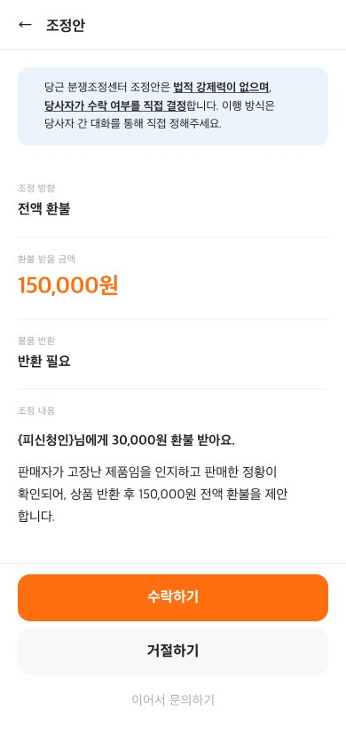
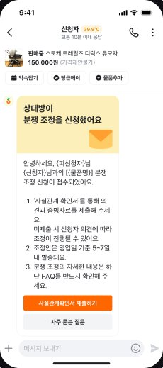
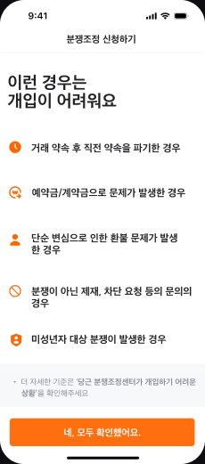

고객이 반복해서 겪는 문제를 찾아 기능으로 해결하고, 출시 후 데이터로 확인합니다
당근 분쟁조정센터에서 1년 동안 문의 데이터로 문제를 정의하고, 실험·화면·메시지·챗봇을 기획해 QA와 출시, 배포 후 지표 확인까지 맡았습니다.
- CAREER
- (주)당근마켓 · OM (Operations Manager)
2025.06 – 2026.06 · 분쟁조정 기능 기획·운영 - EDUCATION
- 연세대학교 미래캠퍼스
글로벌행정학 / 경영학 복수전공 · 2022.03 – - SKILL
- 기능 기획·유관부서 협업VOC·데이터 기반 문제 정의실험 설계·모니터링AI 응대·에이전트 기획QA
- TOOL
- BigQueryExcelFigmaClaude · GPT
처리 실험을 가설과 가드레일로 설계하고, 셀프 해결 기능으로 잇다
바로구매 분쟁 4.4배 증가, 첫 응답 10일
바로구매 전국 오픈 이후 분쟁이 4.4배 늘어 전체의 50%를 차지했고, 첫 응답까지 10일이 걸려 KPI 미달이 이어졌습니다. 문제제기 후 구매확정이나 거래취소를 직접 할 수 없어 분쟁센터로 들어오는 사용자도 있었습니다.
가설: 일반거래를 자동화하면 바로구매에 집중할 수 있다
일반거래 조정안 발송을 자동화하면 처리 인력을 바로구매로 옮겨 첫 응답을 줄일 수 있다고 봤습니다. 자동화가 도움이 되는지보다 얼마나 줄어드는지를 확인하는 데 목적을 두고, 성공 지표와 가드레일을 함께 정했습니다.
다음 단계: 분쟁 전 셀프 해결 경로
모든 건을 운영자가 처리하기보다 사용자가 직접 해결할 경로가 필요하다고 판단했습니다. 당근페이와 협업해 유저 간 구매확정·거래취소 기능을 추가하고, 일정·리스크를 공유하며 배포 전 QA로 시나리오를 점검했습니다.
속도만으로는 인입이 줄지 않는다
처리 속도를 높여도 문제제기 후 사용자가 스스로 끝낼 경로가 없으면 인입은 계속 쌓였습니다. 실험 결과를 다음 기능을 정하는 근거로 썼습니다.
조정안 응답을 화면 안에서 끝내도록
문의로 한 번 더 전달하던 수락·거절
조정안을 받은 뒤 수락·거절 의사를 문의로 다시 보내야 했습니다. 최종 결정에 영향을 주는 단계인데 정해진 구조가 없었습니다.
한 화면에서 확인하고 바로 응답
조정 금액, 물품 반환 여부, 조정 내용을 한 화면에 모으고 수락·거절을 화면 안에서 끝내도록 했습니다.
결제 방식과 응답에 따라 분기
바로구매·일반거래, 수락·거절·48시간 내 미응답, 2차 조정안까지 경우를 나눠 유저향·어드민향 플로우를 함께 설계했습니다.
조정안 유저향 전체 플로우 · 왼쪽 바로구매, 오른쪽 일반거래

안내 채널과 메시지 구조를 바꿔 다음 행동을 이끌다
중요한 분쟁 안내를 놓치는 사용자
분쟁 답변이 일반 문의 알림에 섞여 클릭률이 25%에 그쳤습니다. 조정이 문의 스레드 안에서 핑퐁으로 진행되다 보니 절차·FAQ·확인서 요청이 다른 문의에 묻혔고, 이를 놓치면 이후 행동과 처리까지 지연됐습니다.
채널 전환과 메시지 재구성
분쟁 주요 안내를 문의 알림에서 거래 채팅방 메시지로 옮기고, 헤더·핵심 본문·CTA·FAQ 순서로 다시 구성했습니다. 신청인에게는 증빙폼을, 피신청인에게는 사실관계 확인서를 연결했습니다.
지금 어느 단계인지 보이게, 단계마다 다음 행동 하나
메시지 상단에 접수 → 검토 → 조정 → 종결 단계를 표시하고, 접수 단계에는 증빙자료 제출, 조정 단계에는 조정안 확인처럼 CTA를 하나로 정리했습니다.
단계별 메시지 설계

분쟁 신청 앞단에서 불필요한 인입을 줄이다
인입 후에야 개입 여부를 판단
인입을 유형별로 보니 34%가 개입 불가 대상이었습니다. 사후 분류로는 인입 총량이 줄지 않았습니다.
1차 시도: 신청 전 안내 팝업
확인 사항과 개입이 어려운 경우를 단계별 팝업으로 안내하고, 1·2차 QA로 여백·아이콘·CTA 색상을 디자인 시스템 기준에 맞췄습니다. 인입은 8.8% 줄었지만 개입 불가 비중은 34%에서 28%에 머물렀습니다. 안내보다 판단 시점을 바꿔야 한다고 봤습니다.
판단을 신청 앞단으로 이동
챗봇이 게시글과 채팅을 읽고 분쟁 상황과 신청 가능 여부를 판단하도록 설계했습니다. 판매자·구매자별 신청 가능 유형과 모범답변은 정책 문서로 정의했고, 분석 결과로 신청서의 날짜·거래내용·분쟁원인을 미리 채웠습니다.
AI 판단에는 넘어설 수 있는 길이 함께 있어야 한다
운영 부담을 줄이면서도 잘못된 판단 때문에 정당한 신청이 막히지 않도록 예외 경로를 남겼습니다. 챗봇이 개입 불가로 판단해도 3회 이상 대화하면 신청 버튼이 노출됩니다.

분쟁 신청서와 증빙폼을 구조화하다
증빙을 문의로만 받던 구조
다양한 확장자의 파일을 받기 어렵고, 개인정보 파기에도 리소스가 들었습니다.
당근폼 기반 증빙폼을 공용 모듈로
문의 안에서 주고받는 증빙폼 화면을 설계하고, 중고거래 외 여러 도메인에서 증빙·소명 폼으로 재사용되도록 했습니다.
AI에게 맡길 범위와 사람이 확인할 지점을 나누다
일평균 150건 적체, 조정안 작성이 병목
인입 대비 처리 캐파가 부족해 일평균 150건이 적체됐고, 느린 처리는 강성 클레임으로 이어졌습니다. 오퍼레이터 인터뷰로 조정안 작성 부담을 확인해 우선 자동화할 단계로 정했습니다.
AI 초안 → 운영자 검수 → 발송
결제 방식·물품 카테고리별 조정 기준안을 공정위와 내부 기준을 바탕으로 정리했습니다. 에이전트가 게시글과 채팅으로 상황을 파악해 조정 금액과 산정 이유를 쓰고, 오퍼레이터가 검수한 뒤 발송합니다. 채팅 정보가 부족한 거래에서 전액 환불을 제안하는 오류를 발견해 환불 유형별 판단 기준과 프롬프트를 보완했습니다.
발송량과 판단 품질은 함께 봐야 한다
자동화 이후에도 정책 판단 오류가 생겨, 운영자 검수와 배포 후 오류 피드백을 이어갔습니다.
안내가 있어도 문의로 이어지는 구조
FAQ와 정책 안내가 있어도 필요한 정보를 찾지 못하거나 안내만으로 해결하지 못해 문의하는 사용자가 있었습니다. 안내로 해결되는 문의와 개별 확인이 필요한 문의를 구분해야 했습니다.
1차 답변은 AI, 확인이 필요하면 운영자
엔지니어가 만든 에이전트를 바탕으로 FAQ·운영정책을 참고해 답변하도록 프롬프트 작성, 툴 연결, 테스트·배포를 맡았습니다. 추가 질문이 2회 이상 이어지거나 사람의 확인이 필요한 문의는 운영자에게 연결하도록 설계했습니다.
전체 무개입 종결률만으로는 부족
전체 수치는 70.8%였지만 문의 유형별 차이가 컸습니다. 신청 전 문의와 제재 문의를 나눠 보며, 자동화 범위는 문의 성격에 따라 판단해야 한다는 점을 확인했습니다.
답변이 아닌 처리까지, AI의 범위를 정하는 일
2025년 11월 공개된 ALF V2에서 눈에 들어온 것은 범위였습니다. 답변에서 멈추지 않고 주문 변경, 취소, 교환, 반품 처리까지 AI가 맡도록 넓혔다는 점입니다. 당근에서 분쟁조정을 하며 제가 가장 많이 부딪힌 지점도 답변이 아닌 처리였습니다.
당근에서는 LLM 챗봇이 분쟁 신청 가능 여부를 먼저 판단하도록 설계해 개입이 필요 없는 인입을 74% 줄였고, 조정안 작성 에이전트로 발송량을 일평균 2.7건에서 58건으로 늘렸습니다. 이 과정에서 AI에게 맡기는 범위를 넓힐수록, 어디까지 자동으로 두고 어디서 사람이 확인할지 정하는 일이 기획의 대부분이라는 걸 배웠습니다.
입사 후에는 ALF 관련 프로젝트의 일정과 QA부터 챙기고 싶습니다. 당근페이와 결제 상태별 시나리오를 배포 전에 테스트했던 경험을 살려, 주문 상태에 따라 갈라지는 경우를 빠짐없이 점검하겠습니다. 그리고 고객사가 어디서 자동 처리를 멈추고 상담원에게 넘기는지 VOC로 살피며, 작은 개선을 직접 기획해 출시까지 가져가 보고 싶습니다.